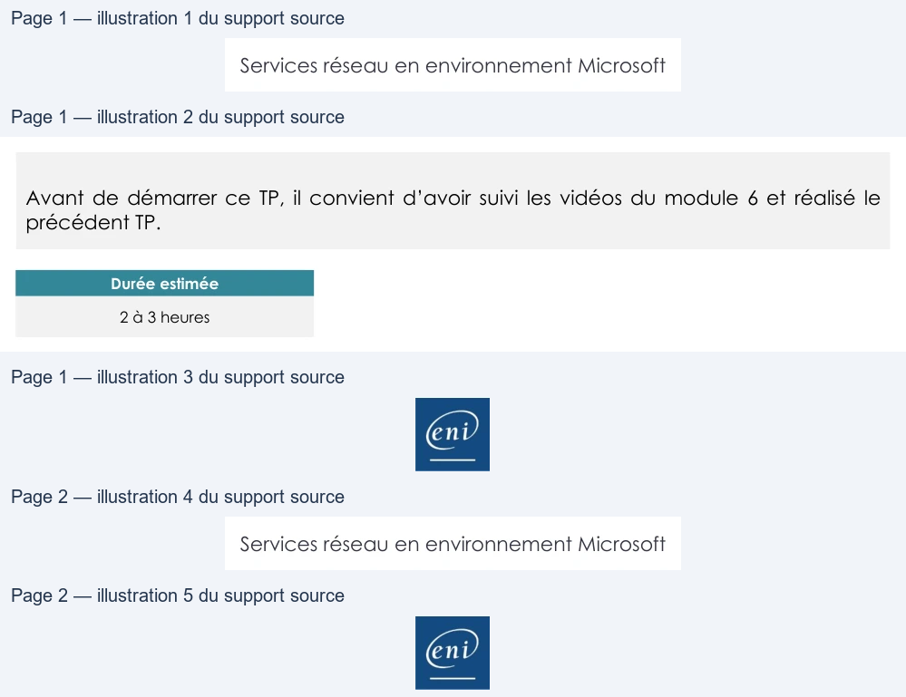

Transcription du document du Drive TSSR. La mise en forme est adaptée au Web ; les compléments IA du portail sont présentés séparément.
Services réseau en environnement Microsoft
TP du Module 06 – Le service DNS
Avant de démarrer ce TP, il convient d’avoir suivi les vidéos du module 6 et réalisé le
précédent TP.
Durée estimée
2 à 3 heures
Prérequis :
•
Avoir réalisé le TP précédent du Module 05.
L’objectif est de mettre en place une hiérarchie DNS :
•
Un domaine de 2e niveau : eni.fr
•
Un domaine de 3e niveau : nantes.eni.fr OU rennes.eni.fr OU niort.eni.fr
•
Neuf domaines de 4e niveau : res.nantes.eni.fr OU res.rennes.eni.fr …
Gestion des domaines :
•
Chacun des serveurs DNS prend en charge un des domaines de la hiérarchie.
•
Le domaine est géré sur le 1er serveur DNS et la redondance est assurée.
o Vous reportez les informations relatives au domaine (nom du domaine,
gestionnaire du domaine, adresses IP des serveurs DNS).
•
Validez le bon fonctionnement de la résolution et de la redondance sur le domaine
pris en charge avant de passer à l’étape suivante.
Page 1/2
© ENI – Tous droits réservés
Services réseau en environnement Microsoft
Résolution des domaines de l’ensemble de la hiérarchie
•
Paramétrez chacun des serveurs pour permettre la résolution de l’ensemble des
domaines de la hiérarchie (domaine parent, enfant...)
•
Vérifiez le bon fonctionnement de la résolution sur l’ensemble de la hiérarchie.
•
Vous réaliserez un schéma montrant les chaînes de résolutions DNS.
Page 2/2
© ENI – Tous droits réservés
